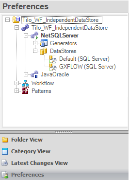

This document explains the steps necessary to create and use an independent Data Store for Workflow tables. Setting up an Independent Data StoreStep 1 - Create a secondary Data StoreThe first step is to create a secondary Data Store; to do so:
Step 2 - Name the Secondary Data StoreName the newly created secondary Data Store as: "GXFLOW" The result should be as follows:  It is important to rename the newly created Data Store to 'GXFLOW'; otherwise, GeneXus will not use it for hosting workflow tables and the default Data Store will be used as usual. In other words, this feature does not have any effect when the 'GXFLOW' DataStore is not defined. Step 3 - Configure GXFLOWOnce the 'GXFLOW' Data Store is created, the Database name property and Server Name Property can be changed. It is possible to change the User ID Property and User Password Property also. Step 4 - DoneRun your application! To do so, press F5. Changing the Schema Name Property (Optional)If the secondary Data Store "GXFLOW" is defined, it is also possible to change the value of the Schema Name Property of the Workflow tables—for those DBMSs supporting Schemas. It is important to distinguish two different scenarios: Scenario 1 - Using same database but assigning a schema for Workflow tablesIt is possible to use the same database as the application tables but using a schema only for Workflow tables—or different from the schema used for the application tables.
Note: The Schema Name Property of the default DataStore will only impact the application tables and not the Workflow Tables. Scenario 2 - Using a different database and assigning a schemaIt is possible to use a different database and also use a schema for the Workflow tables; to do so:
AvailabilityAs of GeneXus X Evolution 3. See Also
|